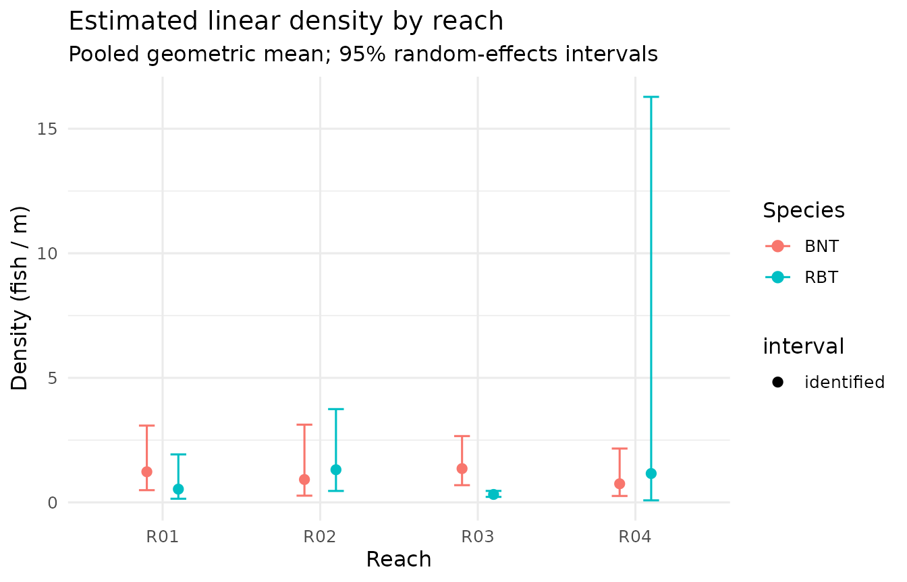

Overview
electrocpue turns raw multi-pass electrofishing records
into abundance, density, and catch-per-unit-effort (CPUE) estimates. The
workflow has four steps:
- Validate the catch and reach-metadata tables.
- Estimate removal-depletion abundance for each removal series.
- Analyze — wire validation, estimation, effort standardization, and density together in one call.
- Summarize repeat surveys up to a reach level with confidence intervals.
The example data
The package ships a small simulated dataset: four reaches, each surveyed on two dates, with two species and three removal passes per survey.
head(example_catch)
#> reach_id date pass_number species count effort_seconds amperage voltage
#> 1 R01 2025-06-15 1 BNT 82 481 3.8 227
#> 2 R01 2025-06-15 2 BNT 42 486 3.8 292
#> 3 R01 2025-06-15 3 BNT 19 489 4.1 251
#> 4 R01 2025-06-15 1 RBT 38 481 3.8 227
#> 5 R01 2025-06-15 2 RBT 15 486 3.8 292
#> 6 R01 2025-06-15 3 RBT 3 489 4.1 251
example_reach
#> reach_id length_m mean_width_m habitat_class crew
#> 1 R01 120 6.5 riffle BW-Gold Field Team
#> 2 R02 95 5.0 run BW-Gold Field Team
#> 3 R03 150 8.2 pool BW-Gold Field Team
#> 4 R04 80 4.1 riffle BW-Gold Field Team
#> gear area_m2
#> 1 Smith-Root LR-24 780
#> 2 Smith-Root LR-24 475
#> 3 Smith-Root LR-24 1230
#> 4 Smith-Root LR-24 328example_catch is long format: one row
per reach × date × pass × species. example_reach carries
the reach length (and, here, area) used to convert abundance into
density.
Step 1 — Validate
validate_cpue_input() runs a battery of structural and
content checks and reports every problem at once. It returns invisibly
on success.
validate_cpue_input(example_catch, example_reach, strict = FALSE)Step 2 — Estimate a single series
The removal estimators work on a vector of per-pass catches.
"auto" uses the Zippin maximum-likelihood estimator and
falls back to Carle & Strub when the Zippin model fails.
# Brown trout at R01, first visit: 82, 42, 19
estimate_population(c(82, 42, 19), method = "auto")
#> method n_passes catch_total N N_se N_lwr N_upr p p_se
#> 1 zippin 3 143 161 8.473939 149 184 0.5162455 0.05616823
#> converged identifiable note
#> 1 TRUE TRUE okThe result reports the abundance estimate N, its
standard error N_se, the per-pass capture probability
p, and a converged flag.
Step 3 — Analyze the whole dataset
analyze_cpue() does everything at once and returns one
tidy row per reach × date × species. Here we standardize effort by
amp-seconds, which requires the amperage column present in
example_catch.
res <- analyze_cpue(
example_catch, example_reach,
method = "auto",
effort_basis = "amp_seconds"
)
res[, c("reach_id", "date", "species", "N", "N_se",
"density_per_m", "density_per_m2", "cpue")]
#> # A tibble: 16 × 8
#> reach_id date species N N_se density_per_m density_per_m2 cpue
#> <chr> <date> <chr> <dbl> <dbl> <dbl> <dbl> <dbl>
#> 1 R01 2025-06-15 BNT 161 8.47 1.34 0.206 0.0252
#> 2 R01 2025-06-15 RBT 58 1.97 0.483 0.0744 0.00986
#> 3 R01 2025-08-20 BNT 139 2.91 1.16 0.178 0.0254
#> 4 R01 2025-08-20 RBT 71 2.68 0.592 0.0910 0.0128
#> 5 R02 2025-06-15 BNT 95 8.61 1 0.2 0.0181
#> 6 R02 2025-06-15 RBT 119 9.29 1.25 0.251 0.0229
#> 7 R02 2025-08-20 BNT 81 6.74 0.853 0.171 0.0179
#> 8 R02 2025-08-20 RBT 132 11.0 1.39 0.278 0.0280
#> 9 R03 2025-06-15 BNT 210 10.6 1.4 0.171 0.0295
#> 10 R03 2025-06-15 RBT 47 1.32 0.313 0.0382 0.00738
#> 11 R03 2025-08-20 BNT 190 13.0 1.27 0.154 0.0253
#> 12 R03 2025-08-20 RBT 50 2.04 0.333 0.0407 0.00758
#> 13 R04 2025-06-15 BNT 65 1.95 0.812 0.198 0.0179
#> 14 R04 2025-06-15 RBT 117 13.0 1.46 0.357 0.0267
#> 15 R04 2025-08-20 BNT 55 1.41 0.688 0.168 0.0172
#> 16 R04 2025-08-20 RBT 77 5.64 0.962 0.235 0.0220Both length-based (density_per_m) and areal
(density_per_m2) density are returned; areal density is
NA when reach area is unavailable.
Step 4 — Summarize repeat surveys
summarize_cpue() collapses the repeat visits per reach
to a single reach × species summary with a confidence interval on
density. The reported density is a random-effects pooled geometric mean,
and its interval combines each survey’s method-aligned likelihood
uncertainty with between-survey variation on the log scale. A reach is
flagged weak (and n_identified records how
many surveys backed the interval) when too few surveys are well enough
identified to support it — at low capture probability the removal
estimate is biased, so the interval is withheld rather than shown as a
confident bar.
smry <- summarize_cpue(res, level = 0.95)
smry[, c("reach_id", "species", "n_surveys", "n_identified", "weak",
"N_mean", "density_per_m_mean",
"density_per_m_lwr", "density_per_m_upr")]
#> # A tibble: 8 × 9
#> reach_id species n_surveys n_identified weak N_mean density_per_m_mean
#> <chr> <chr> <int> <int> <lgl> <dbl> <dbl>
#> 1 R01 BNT 2 2 FALSE 150 1.23
#> 2 R01 RBT 2 2 FALSE 64.5 0.533
#> 3 R02 BNT 2 2 FALSE 88 0.919
#> 4 R02 RBT 2 2 FALSE 126. 1.31
#> 5 R03 BNT 2 2 FALSE 200 1.36
#> 6 R03 RBT 2 2 FALSE 48.5 0.320
#> 7 R04 BNT 2 2 FALSE 60 0.748
#> 8 R04 RBT 2 2 FALSE 97 1.16
#> # ℹ 2 more variables: density_per_m_lwr <dbl>, density_per_m_upr <dbl>Visualizing density with uncertainty
Identified reaches carry a 95% interval; a weak reach is
drawn as a hollow point with no bar (the interval would not be
trustworthy).
library(ggplot2)
ggplot(smry, aes(x = reach_id, y = density_per_m_mean, colour = species)) +
geom_errorbar(
aes(ymin = density_per_m_lwr, ymax = density_per_m_upr),
width = 0.2,
position = position_dodge(width = 0.4)
) +
geom_point(aes(shape = weak),
position = position_dodge(width = 0.4), size = 2.5) +
scale_shape_manual(
values = c(`FALSE` = 16, `TRUE` = 1),
labels = c(`FALSE` = "identified", `TRUE` = "weak"),
name = "interval"
) +
labs(
x = "Reach", y = "Density (fish / m)", colour = "Species",
title = "Estimated linear density by reach",
subtitle = "Pooled geometric mean; 95% random-effects intervals"
) +
theme_minimal(base_size = 12)
Choosing an estimator
-
"zippin"— classic maximum-likelihood depletion estimator; reportsNAwhen the catch series shows insufficient depletion. -
"carle_strub"— weighted-likelihood (Bayesian) estimator; more robust when depletion is weak, and the recommended default for routine use. -
"auto"— Zippin first, Carle & Strub as a fallback.
Point estimates and standard errors match
FSA::removal(), so results are directly comparable to that
reference implementation.